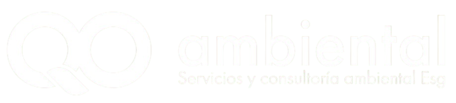

QO~ambiental
Conectamos lo técnico, lo jurídico y lo empresarial para asegurar la viabilidad y sostenibilidad de sus activos en un entorno regulatorio y climático cada vez más exigente.
Quiénes Somos
En QO-Ambiental acompañamos a organizaciones en la gestión estratégica de sus desafíos ambientales, integrando cumplimiento normativo, sostenibilidad y desarrollo de negocio.
Nuestro enfoque va más allá de la consultoría tradicional: estructuramos soluciones que permiten a las organizaciones tomar decisiones informadas, gestionar riesgos y capitalizar oportunidades en un entorno regulatorio y climático cada vez más exigente.
Actuamos como un aliado estratégico que conecta lo técnico, lo jurídico, lo territorial y lo empresarial.

Propuesta de Valor
Cumplimiento Normativo
Gestión integral con visión regulatoria actualizada
Gestión de Riesgos
Identificación, mitigación y defensa ambiental
Sostenibilidad Corporativa (ESG)
Estrategia y reporte bajo estándares internacionales
Nuevas Oportunidades de Negocio
Mercados de carbono, economía circular y más
Inteligencia Territorial
GIS y analítica espacial para la toma de decisiones
Enfoque Estratégico
Gestión de cumplimiento con visión estratégica.
Integración de sostenibilidad en el núcleo del negocio.
Desarrollo de nuevas oportunidades sostenibles.
Uso de información y tecnología GIS para decidir mejor.


Líneas de Servicio
Ocho líneas de acción integradas que cubren todo el ciclo de vida ambiental y de sostenibilidad de su organización.
Sostenibilidad y ESG
- Estrategias de sostenibilidad corporativa
- Diagnóstico de madurez ESG
- Reporte Supersociedades (Informe 08)
- Informes GRI, SASB, TCFD, ISSB S1/S2
- Huella de carbono y hoja de ruta net zero
- Análisis de doble materialidad
- Gestión de riesgos climáticos (TCFD)
Gestión Ambiental Estratégica
- Licenciamiento ambiental
- EIA, PMA, DAA
- Cumplimiento normativo integral
- Auditorías ambientales
- Debida diligencia ambiental (M&A)
Riesgo y Defensa Ambiental
- Procesos sancionatorios
- Estrategias preventivas y correctivas
- Gestión de riesgos regulatorios
- Debida diligencia y DDHH
Desarrollo de Negocios Sostenibles
- Mercados de carbono
- Economía circular
- Sostenibilidad en cadena de valor
- Estructuración de proyectos
Transición Energética y Proyectos
- Gestión ambiental de proyectos energéticos
- Permisos y viabilidad territorial
- Evaluación de impacto — renovables
- Hidrógeno verde: estructuración ambiental
Inteligencia Territorial y GIS
- Viabilidad espacial de proyectos
- Restricciones ambientales y sociales
- Modelación de escenarios territoriales
- Dashboards geográficos de decisión
- Monitoreo y seguimiento territorial
Formación y Cultura Sostenible
- Capacitación ESG para equipos
- Cultura organizacional sostenible
- Comunicación anti-greenwashing
- Programas de sensibilización
Monitoreo y Gestión Operativa
- Monitoreo de agua, aire, suelo y ruido
- Seguimiento a obligaciones ambientales
- Programas de compensación e inversión (1%)
- Indicadores y KPIs de gestión

Nuestro TrabajoPortafolio de Proyectos
Conozca en detalle nuestras capacidades, proyectos ejecutados y metodologías. Descargue el portafolio completo o escanee el código QR desde su celular.
Escanea desde tu celular
Apunta tu cámara al código QR para
acceder al portafolio completo
Nuestros Territorios


Quienes Confían en Nosotros
Organizaciones de alto nivel que han elegido a QO Ambiental como su aliado estratégico.

Despliegue de proyectos FNCER a gran escala en Colombia.

PMA y auditoría técnica de infraestructura.

Consultoría institucional en viabilidad territorial.
Inteligencia GIS y licenciamiento táctico.

NUESTRO TERRITORIO
Colombia biodiversa, nuestra mayor responsabilidad
Inicie su Estrategia
Cuéntenos sobre su reto ambiental. Nuestro equipo responde en menos de 24 horas.